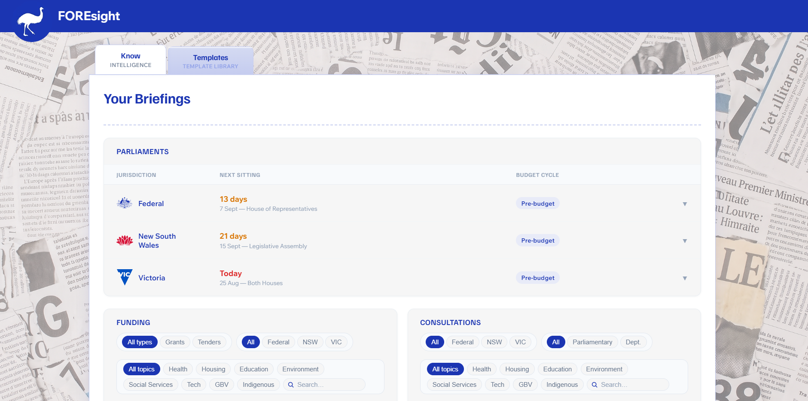
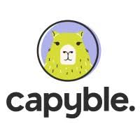
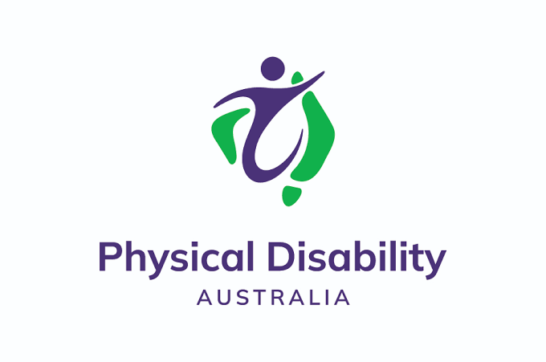
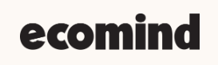
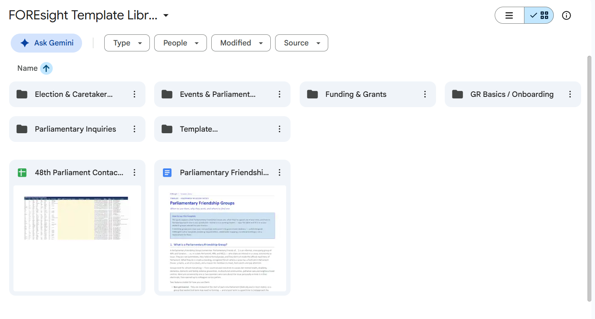
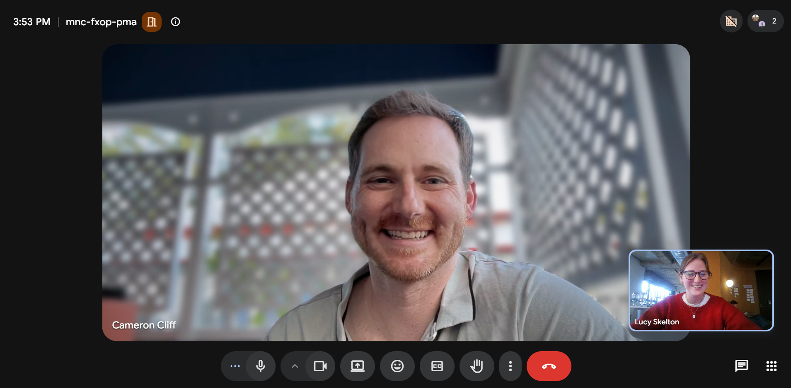
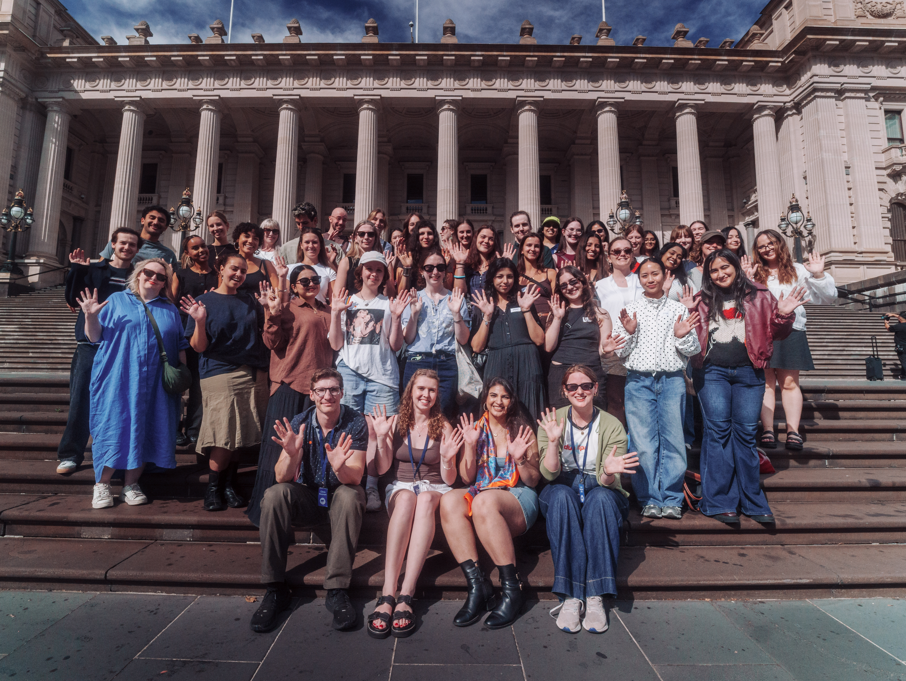

Intelligence Tool
Tracks parliament sittings, funding and consultations in real time.
FOREsight, a FORE Good product
Join the for-purpose organisations building the confidence and structure to show up in government rooms, without hiring a team to do it.
Trusted by:



Every day you're affected by government decisions, but you don't have the time, budget or in-house expertise to engage strategically. We don't blame you. It's not that government relations gets neglected because organisations don't care. It's that it's nobody's full-time job, good practice isn't obvious, and full-service agencies are priced for orgs far bigger than most for-purpose groups.
FOREsight, built by not-for-profit FORE Good, gives you the templates, structure, and direct access to an experienced former government staffer, so you can run government relations yourself, with someone in your corner. It's not a lobbying agency, and it's not a generic resource hub. It's practical, ongoing support built for organisations just like yours.
Funding rounds close. Consultations open and shut. Policy shifts without warning.
Don't miss an opportunity FORE engagement.

Tracks parliament sittings, funding and consultations in real time.

Prepare from a template, not a blank page. Ministerial briefings, submissions, budget asks, stakeholder maps and more!

Judgement, not just information. Up to 2 x 30-minute calls with former government staffers each month for personalised support.
FOREsight is built on FORE Good's track record: real briefs contributing to real world uptake and real relationships with MPs and staffers across the country.

"We play in a unique space that's a mixture of social change, company policy and education. FOREsight has been invaluable to help us figure out who to talk to at different levels of government, what tenders and grants to stay across and where we best fit. It's really helped us to demystify the process and the team has been wonderful in helping us to understand different templates and processes that best suit a small team like ours."
- Cameron Cliff, Founder of the social enterprise Capyble
Early joiner pricing (until end of 2026)
Because a $40k annual budget and a $10m budget can't stretch the same way.
$49/month
$490/year, 2 months free
Most popular
$229/month
$2,290/year, 2 months free
Monthly or annual, no lock-in. Change or cancel whenever you need to. This is our early joiner pricing, available to organisations who come on board before the end of 2026.
In development
We're building the platform in the open. Take it for a spin and tell us what works and what doesn't - it's free for everyone until October 31 while we shape it with real feedback.
No. Most of the organisations we work with have never had someone dedicated to this before. The templates and intelligence tool are built to be used without prior experience, and the advisory calls are there specifically to help you turn what you're seeing into action.
Yes. The moments that matter rarely announce themselves: a minister's diary fills up months ahead, a funding round closes while you're still deciding, a consultation opens and shuts in weeks. By the time it's obvious, the window's usually gone. The relationships and positioning that get you through those moments take significant time to build, they can't be assembled the week you need them. FOREsight does that work in the quiet months, so when something opens, you're already in the room instead of starting from zero.
No. We don't lobby government on your behalf or take positions for you. FOREsight gives you the tools, structure and expert backup to engage government yourself, in your own voice.
You're already carrying this risk today, those decisions get made whether or not anyone's watching for them. Frame it for your board as closing a gap, not opening a new cost: FOREsight costs far less than a single missed grant round or a badly timed policy shift, and it's priced to your organisation's size, not a flat rate built for one ten times bigger. Ask us on your intro call and we'll help you shape it into something your board will actually respond to.
Yes. FOREsight is built and a part of FORE Good, a not-for-profit. That's not incidental: it means this comes from inside the sector, not from a commercial vendor guessing what for-purpose organisations need. FOREsight is further built on FORE Good's own track record (80+ MP meetings and counting since mid April 2026) rather than theory. You can find out more about FORE Good directly at FOREgood.org.au.
AI can summarise a policy update in seconds and draft you a template and if that's all you need then great. But what about knowing whether it's actually relevant to your organisation, whether it's accurate, or what to do with it once you've read it? It comes down to trust and judgement. Everything on FOREsight is verified by our team before it reaches you. We've used our templates ourselves and we'll keep refining them over time. Further, the advisory calls give you real judgement from someone who's done this work. When the relationships you're managing took years to build, is a generic AI summary really where you want to take the risk?